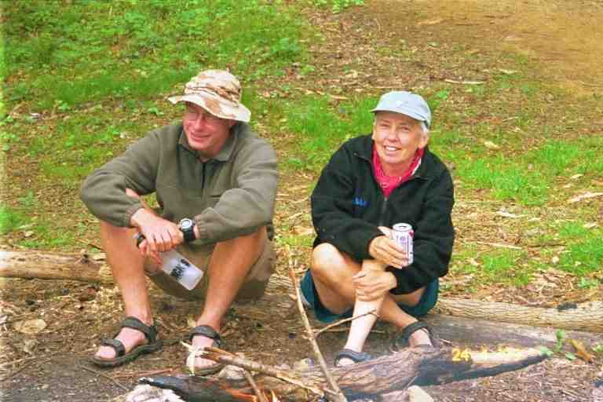

We left Erwin in the early afternoon of April 20 with 337 miles under our belt. We had accomplished a lot in Erwin without taking any days off. About 1 mile after getting back on the trail we came to the other Nolichucky hostel. It is located in the woods on the bank of the river and belongs to the company that does river rafting and kayaking trips. The facilities include showers, tent sites, bunk houses and private rooms in cabins. They cater to their own customers as well as hikers.
Our goal was Curley Maple shelter, 4 miles from Erwin and 1400 feet up the mountain. The walking was not too difficult but it was very hot.. On the way we found a camera which we recognized as SONGBIRD's. There were a number of people at the shelter including SKIRTS and her boyfriend TWOTONE ALBATROSS. Skirts had hiked since Springer Mountain and he had just recently joined her. She is a big strong young girl who hikes in a skirt. We first met her in Hot Springs at the post office where she was mailing one of her skirts up ahead.
TWEETIE PIE and TOMCAT were here also. This was our first meeting and they would become an important part of our hike. Their real names were Holly Forte and Chris Dooley. They were known as HOLLY and DOOLEY to their friends back home and they soon became known by those names on the trail, which is just as well since there was another TOMCAT on the trail. SEMPER FI was here and he too was more well known by his real nick name, DREW, rather than his trail name. He often signed the registers as SEMPER FI DREW. I believe his trail name was derived from the US Marines motto. He was in the marines but had to leave because he was allergic to a lot of the food. We gave him SONGBIRD's camera because he was much faster than us and had more chance of catching up to her.
Another hiker here was QUERCUS. Strangely enough we had met another QUERCUS a few times and he had told us there was a second one on the trail somewhere. The first Quercus had told us that he was a forestry graduate and that his trail name meant oak. When I mentioned to this hiker that he was the other QUERCUS, he said he was the original and the other one was the other QUERCUS. He told a funny story of getting his maildrops and finding that there were no M&M's in his gorp. He had prepared all his food for mailing by his girlfriend but her little son was eating the M&M's before the gorp got mailed.
LAUREL and BROOKS arrived with some mushrooms that they had just picked and I finally agreed to sample some. BROOKS cooked them up in olive oil and seasoned them. He said that the ideal way to cook Morels was to soak them first but there was not enough time. The taste was OK but not memorable. QUERCUS had a nalgene bottle of red wine which he shared for the occasion. It was our first alcohol of the trip. As usual BROOKS and LAUREL left to find a quiet tenting spot but the rest of us remained.
SKIRTS and TWOTONE each had their own stove. She had the Whisperlite she started with, and he brought a Sierra stove. The latter was a small cylindrical stove that burned wood. The idea was to pick up twigs and criss cross them inside and light it. It came with a little fan inside which ran on a small battery. The fan helped keep the fire going. The stove was supposed to be more environmentally friendly than the gas or alcohol stoves, however, some have pointed out that the use of a battery is not ecologically acceptable. Furthermore the stoves were sometimes hard to light, took some time to get hot, smoked a lot when starting, and blackened the cooking pots.
The next day was a big one. It started with a climb up to Beauty Spot where we got a 360 degree view which included the Roan Highlands which we would be entering the next day. A lot of the walking was in wooded areas with moss covered rocks and spring flowers growing on the slopes. In late afternoon, after 12 miles, we arrived at Cherry Gap shelter which was occupied by four section hikers in their thirties and forties and a dog who was overly friendly and a nuisance. They were sprawled out in the shelter playing cards with a radio blasting. A few thru hikers had miniature Walkman radios but nobody would ever think of imposing their music on others or of disturbing the sounds of nature.
HOLLY and DOOLEY were sitting on logs about 30 feet in front of shelter cooking a meal. We did likewise. They did not like the atmosphere here and were thinking of going on. We were also considering going on but we were approaching an area where there had been reported problems with some locals. There was a road crossing 2.5 miles ahead and a campsite 5 miles beyond the road. It was late in the afternoon and we did not know if we could travel fast enough to get there before dark.
We were soon joined by two men who had met on the trail and were thru hiking together: HIGH COUNTRY and VICE. These two were doing big days and we would only see them one more time. They set up their tents in the beautiful clearing in front of the shelter.
HOLLY and DOOLEY packed their bags and got ready to leave. They said they would be buying groceries at a store a half mile from the trail, down the road that was ahead. We decided we would leave also but were concerned about safety, so we said we would likely pass them while they were at the store and hopefully would camp with them later. We were carrying at least 8 days of supplies so had no reason to stop.
When we got to the road, we made sure there was no traffic before getting out of the woods. We hurried quickly across the road and went back into the woods. The trail slowly climbed a hill and paralleled the road below us for a short distance. It then widened and became an old road which was used by ATV's and other off road vehicles as evidenced by tire tracks. As we climbed we saw farms and homesteads down in the valley below us to our right.
We eventually came to an abandoned field with a number of fire rings and garbage. It seemed like more evidence of non hiking campers. The trail followed a row of old fence posts with white blazes on them, and then veered up a slope and into the woods. At this point we came to a stream where we could stop but it was still too close to the field to camp and the trail was about 4 feet wide and accessible by ATV. As we continued to slowly climb, the trail eventually reached the ridgeline and then became a narrow path through the woods at the top of the mountain.
We were looking for signs of the campsite and also hoping that HOLLY and DOOLEY would catch up to us. It was getting late, so we explored other options. If we did not reach the campsite, it was at least reassuring to know that the trail was now narrow and could not be accessed by ATV, although trail bikes could easily come through. In order to feel really secure, I was hoping that the trail would drop down below the ridgeline and that we could then find a site to camp on the other side of the hill and not be seen from the trail.
It was now getting darker and the trail stayed on the ridgeline so we finally settled on a little clearing that sloped gently away from the trail, flattened out and then sloped down towards the edge of the mountain. We picked a spot in the flat area; however, we would still be visible from the trail. We put up our tent as fast as possible being very careful as we emptied our bags because the whole area was covered in a few inches of dead leaves.
We had a snack and then I prepared our food bags. I walked down the slope a little further to find a tree to hang our food. The idea was to tie a heavy object (rock or small piece of wood) to one end of the rope and throw it over a branch and then to tie the food bags to the other end of the rope and haul the bags up off the ground. I had problems finding an object to tie to the rope. I found a few light pieces of wood but they were too light to throw high enough to reach the branches which were high. The few times that I managed to get the rope over a branch, the weight of the bag broke the branch as I pulled the food up and the branches nearly fell on me. I realized that most of the trees here were dead. When I finally succeeded, I walked back to the tent in the fading light, noticing the noise of the dry leaves as I walked. At least we would notice if someone came by. As I got in the tent I glanced up at all the dead trees around us. I prayed that there would not be a wind storm.
The night was uneventful and we slept well after our 17 mile day. I guess we were less visible than we thought because it seems that HOLLY and DOOLEY came by after we set up and did not see us. Part of the reason was likely that the tent is a light grey color.
Within a mile of leaving the next morning we came to a sign for water that pointed down a steep hill. We were running short so I took off my pack, grabbed our water bags and the filter and headed down the hill. It was a very steep descent and the bottom of the valley was far below. On the way down I saw a hiker leaving the valley in the other direction far off in the distance. I had to yell loudly to get his attention. He confirmed there was water. After I obtained water and struggled back up the hill, we proceeded on our way. The trail descended slowly and within half a mile we came to a side trail leading to a campsite and a stream. This was obviously an easier access to the water source that I had worked so hard to get to.
Around noon we came to a road at Hughes Gap where we met PHIN and her boy friend GOAT who had driven up from South Carolina to spend some time with her. They were slackpacking and offered to slack us the following day. We declined because we were not sure if we wanted to slack during our trip and also it would mean leaving our packs unattended under a tarp in the back of his pickup truck. After resting and drinking a pop they offered, we headed towards Roan Mountain.
Hughes Gap was at the 4100 foot level and we were headed to the summit which was 3 miles away at 6300 feet. It took about 3 hours to climb the mountain. Eventually the trail got more difficult as it ascended through a steep narrow rock filled gully which seemed to have been formed by erosion. On a number of occasions we had to crawl up over boulders or grab onto trees to pull ourselves up. We eventually came to a clearing on the edge of the mountain but there was no view because of the fog which had enveloped the top of the mountain. We continued on up following an old rock strewn road, lined with thick bushes. As we went higher, a cool damp mist surrounded us. Finally we came to a sign for Roan High Knob shelter which pointed off the trail up a narrow path leading through the bushes. We did not want to stop so soon but we went to check out the highest shelter on the AT.
The shelter is an old fire warden's cabin made of stone. This shelter is an actual building with four walls and a door. When we arrived, we found an older woman, all bundled up sitting on the ground next to the door. She told us how really glad she was to see us because she thought she was going to have to spend the night alone in the shelter. A number of hikers had stopped by but kept on going. I hesitated before telling her that we were also not spending the night.
A tour of the shelter convinced us to keep on going and also explained her apprehension at staying here. It was a dark and musty square shaped building. There was a door in front and one small window on a side wall and a dirt floor. Attached to a wall in a corner, was a ladder leading through a hole to a second floor. This would be a better place to sleep because of the wooden floor and two windows which let in light. The lady said she was not able to climb up to the second level.
We went back outside and sat and talked with her for some time. Her name was MERBEAR and she was section hiking from Erwin to Damascus, a distance of 120 miles. She told us how much she enjoyed hiking but that her partner was a couch potato and her children were all worried about her. She was a thin lady who we later discovered was 71 years old. Her picture is in the hiker directory at www.trailjournals.com .
She was not going any further because she was tired from climbing up the mountain. In order to climb up the mountain, she had removed her pack a number of times, lifted it up over the rocks and then climbed up to it. She would then put it back on and continue climbing. This task was made more difficult because she was not strong enough to lift her backpack on to her back. She had to find a rock or other high object on which to place the pack and then she would crouch down to get it on her back. It would obviously take endurance and patience to climb the mountain in this manner.
As we sat and talked, we noticed how cold and windy it was up here. Another good reason to continue on. After leaving, we worried about MERBEAR for some time.
The trail down from the summit follows an old road which switches back and forth as it goes down. I called it a road because of its width but I would not drive a vehicle on it. It was covered with large rocks, many pointed, and our feet rarely touched the earth. The trail finally veered off the road into a gully which went steeply down to Carver Gap. The climb out of the Gap was on a series of steps made from logs leading up Jane Bald. The logs were placed there to stop erosion from hikers on the grassy area hill. However, the steps were extremely awkward to navigate because of their height and depth so most seemed to walk up the hill on the grass and thus caused deep ruts in the soft hill.
After leaving Jane Bald with its grassy summit and beautiful views of fog covered Roan Mountain, we headed into a thicket of bushes and eventually into the woods. The wood floor was covered with a blanket of small white spring flowers, giving the impression of snow on the ground. (See the attached picture)
We arrived at Stan Murray shelter late in the day and decided to stop. We would have liked to get to Overton Mountain shelter which was only 1.5 miles further but we had just hiked 13.5 miles of difficult terrain and we needed the rest and had to make supper before dark.
There were 4 section hikers in the shelter who were out for the week. This was an annual event for the group, which consisted of a boss and 3 employees. They were nice people and were having a good time. FOODBAG was in the shelter. He said he was having major foot problems which he felt were due to his speed. He asked if it was OK if he hiked with us. We gladly agreed. SLIPPER was here and was already in her tent. VICE and HIGH COUNTRY were also here, one in the shelter and one set up his tent next to us. They told us that we had been wise not to have stayed at the shelter the previous night. Apparently the men and their dog were a problem all night.
We were told that getting water was a tricky. I walked down a steep slope to a spot where a spring came out of the hill and had carved itself a deep fifteen foot wide muddy path down the hill. The water was trickling down the slope in a few spots, but I had to walk in the soft muck to get to it. When I did, I found that there were no real pools from which to collect it. One of the section hikers had lent me a plastic tube which I tried to use to make the water run down into our pot for supper and was successful in obtaining a little. I eventually managed to make a little pool to filter water for drinking. Walking back through the mess, I slipped and dropped my pan of water. Oh the joys of roughing it in the mountains.
The next day we left with FOODBAG. MA would normally walk in front with FOODBAG close behind and I at the rear. FOODBAG was hoping our slower pace would help the tendonitis problem in his feet. We soon came to the side trail to Overton Mountain shelter. It is a barn that has been converted to a shelter with a loft. We heard that it would hold about 50 hikers. Those who stay get a view of a beautiful green valley below them. We met DREW coming from the barn.
We continued on and came to a clearing and began climbing Little Hump Mountain a high grassy bald with a small rock formation on top. We stopped at the summit for a break and were soon joined by CHRISTOPHER ROBBINS and his dog TIGGER. He had stayed at the barn and said there had been a big crowd and many of them were still there. I marvelled at his snack. He took out a bag of miniature snicker bars which he dipped in a jar of peanut butter and then rolled in some grape nuts. This would likely be very healthy because grape nuts are reputed to be the most concentrated protein available.
We went down into Bradley Gap where there was a good water source. I took out our water bags and filtered water into them. CHRISTOPHER ROBBINS also had the hydration system but he filled his bag differently. He left the water bag in his backpack and attached the drinking tube to his filter. He was then able to fill the bag directly. Unfortunately, when he detached the filter, water squirted back out of the tube while he tried to re-insert the bite valve.
Soon after we came to the edge of a hill and looked across to Hump Mountain, another bald.
The attached picture gives a good view of the grassy mountain. The two dots on the path are CHRISTOPHER ROBBINS and TIGGER who were climbing ahead of us. It was a long wonderful walk up to the top of the mountain. The sun was shining, there was a little bit of wind and we could see in the distance on both sides of us as we went up the grassy mountain. As we approached the summit, the trail became less steep and contoured a number of rock formations that were scattered along the trail. (Picture of MA and FOODBAG) At the summit there was a large boulder that we climbed to get a magnificent 360 degree view. We then took a break at the base of the rock away from the wind. Life is great!On the way down we were passed by ULYSSES and CIRCUIT RIDER who told us of spending the night with MERBEAR on Roan Mountain two nights before. They had a wonderful time sharing food and cooking together. We were relieved that all went well for MERBEAR.
The trail zigzagged down 1000 feet where it leveled off at Doll Flats, an area with a campsite but which was accessible by car. The trail then went down another 1500 feet by a series of long switchbacks. The trail went in and out of wooded areas as it clung to the side of the mountain. We saw our first snake of the trip, a large Black snake, also known as Rat snake. These snakes are not poisonous but can get to be very large. This one was curled up in the sun a few feet below the trail and was probably 6 feet long.
In the middle of the afternoon, we finally arrived at our destination, Apple House Shelter. This shelter was larger than most, about 20 by 20, and there was a wall across the front with a large doorway in the middle. Steps lead up to the entrance. On the steps was an open 2 quart carton of Neapolitan ice cream. We were told that it was the second of two cartons and to help ourselves. We quickly removed our packs, found our spoons and dug in. It was soft and cold and good. We were also told that there was beer in the stream behind the shelter. RICO had bought some Pabbst Blue Ribbon (PBR) at a store not far up the road and the connoisseurs in the group were turning their noses up at his choice. I had no problems accepting free beer. (MA with her PBR sitting with SEMPER FI DREW)

We had not seen RICO and his dog SIMBA since our first night on the trail. We did not recognize him but he knew us. Also here were ICEHOUSE, CHECKDAM, DREW and a few others. We were later joined by CABOOSE, CHICKEN, GIT BACK and BEORNE who had all stayed late at the barn playing cards (spades). BEORNE is the heavy, spandex wearing, yellow blazing trail legend that we met in Hot Springs.
RAINDANCER, ELF, and SONGBIRD stopped by. They were slackpacking and would be picked up by PHIN and GOAT at the road. DREW gave SONGBIRD her camera. I have not mentioned ELF since before Fontana Dam when she was hiking with MICHIGAN MAN. They had a falling out in the Smokies and she hooked up with RAINDANCER in Erwin.
Late in the afternoon, a fire was started in the ring in front of the shelter and CHECKDAM brought out two dozen hot dogs and buns and offered them around. They were well appreciated even some of them were a strange reddish colour.
We were glad there were others here because the shelter is only half a mile from the road. It is not always a good idea to stay close to a road, and to make matters worse we were in the middle of a reputed problem area. The history of the situation is that the land for the trail was expropriated from families who had owned it for generations and felt they were underpaid for it. They call the trail the government trail and in the past some locals took their ire out on hikers by doing such things as hanging fish hooks on lines across the trail. Some arrests were made after incidents and there have been no problems since then, with the exception of vandalism on cars that park overnight at the trailhead here.
On the other hand I have read a number of journal entries by hikers who spent time at the two local towns of Elk Park NC and Roan Mountain TN and they speak of having no problems getting hitches and help. Some locals even lent them their vehicles to get supplies.
The hikers here had gone up the road about a mile to Elk Park where they had a few minor problems such as the local hardware selling fuel at exorbitant rates and the grocery store not accepting credit cards for beer and food. All was not bad however because the next day was Sunday and the Steak House at Elk Park had an AYCE (all you can eat) Sunday brunch. A number of hikers would be sticking around for that the next morning. Around supper time, FOODBAG, CHICKEN, CABOOSE and I began a game of scrabble (CHICKEN's game I believe) but had to abandon it as dusk set in. That night in the shelter I read a little with my headlamp. I had obtained this novel at a shelter in exchange for one I had borrowed from Duckett House. There are sometimes a book or two at the shelters, left there by hikers when they finished reading. Some hikers, however, try to conserve weight by tearing out sections of books as they complete them.
I tried to go to sleep with the sound of a number of hikers talking at the campfire in front of the shelter. I awoke in the middle of the night to the sound of BEORNE snoring in his tent which was set up in the open area far in front of the shelter. BEORNE never slept in shelters because his snoring caused problems. More about his snoring in the next instalment.
In the next instalment we head to Kincora the best hostel on the trail (according to BALTIMORE JACK and others) and then to Damascus VA, the #1 town on the trail.